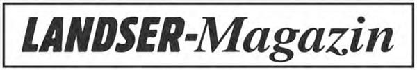

Militärhistorische Persönlichkeiten:
„Wahre Größe ist bescheiden; der Mensch soll im Mittelpunkt aller Pläne und Befehle stehen. Fürsorge für die Truppe ist die oberste und schönste Pflicht.“ Diese Sätze stehen in einem Nachruf, den General Brennecke, ehemals Generalstabschef der Heeresgruppe Nord, seinem verstorbenen Oberbefehlshaber, Generalfeldmarschall Wilhelm Ritter von Leeb, gewidmet hat. Sie kennzeichnen das Wesen eines verdienten Soldaten, der zu Zeiten Kaiser Wilhelm I. geboren wurde und damit etwa gleichaltrig ist mit Generalfeldmarschall von Rundstedt und Großadmiral Raeder.
Das Wort „Ritter“ läßt erkennen, daß der spätere Generalfeldmarschall sich im Ersten Weltkrieg die höchste bayerische Kriegsauszeichnung, den Militär-Max-Josephs-Orden, erworben hatte. Es symbolisiert aber auch die ritterliche Grundeinstellung und das allzeit noble Verhalten dieses Mannes, der nicht zum Geburtsadel gehörte. Leeb wurde vielmehr erst mit der Verleihung des Militär-Max-Josephs-Ordens wegen vorbildlicher soldatischer Leistungen in den persönlichen Adelsstand erhoben – wie sein Feldmarschall-Kamerad von der Luftwaffe, Robert Ritter von Greim. Den beiden Max-Josephs-Rittern des Ersten Weltkrieges wurde schon 1940 das Ritterkreuz verliehen, das außer ihnen noch sieben weitere Träger des höchsten bayerischen Tapferkeitsordens erhielten:
• Bruno Ritter von Hauenschild (zuletzt Generalleutnant und Kommandeur der Schulen der Panzertruppe)
• Hubert Ritter von Heigl (Generalmajor und General der Pioniere beim Oberkommando Nordwest)
• Georg Ritter von Hengl (General der Gebirgstruppen und Kommandierender General des XIX. Gebirgskorps)
• Max Ritter von Pohl (General der Flieger und Kommandierender General der Luftwaffe in Mittelitalien; 1927 einer der Batteriechefs in dem von Oberst Ritter von Leeb geführten Artillerieregiment)
• Hans Ritter von Schmidt (Major d. R. und Führer eines Infanterieregiments)
• Eugen Ritter von Schobert (Generaloberst und Oberbefehlshaber der 11. Armee)
• und der nicht weniger als zwanzigmal verwundete Wilhelm Ritter von Thoma (Generalmajor und Kommandeur einer in Nordafrika eingesetzten Panzerdivision).
Wilhelm Leeb entstammt einer altbayerischen Beamten- und Soldatenfamilie und wurde am 5. September 1876 in Landsberg am Lech als Sohn des Majors a. D. Adolf Leeb geboren. Nach dem Abitur, mit dem er den Besuch des humanistischen Gymnasiums in Passau abschloß, trat er am 16. Juli 1895 als Fahnenjunker in das 4. Bayerische Feldartillerieregiment „König“ in Augsburg ein, in dem ein paar Jahre danach auch sein jüngerer Bruder Emil, der spätere General der Artillerie und Chef des Heereswaffenamtes bis 1945, seine militärische Laufbahn begann. Sein Leutnantspatent erhielt Wilhelm Leeb am 3. 3. 1897. 1898/99 besuchte er die Artillerie- und Ingenieurschule München.
Im Jahre 1900 meldete er sich freiwillig zur Teilnahme an der internationalen China-Operation unter dem Oberbefehl des deutschen Generalfeldmarschalls Graf Waldersee („Boxer-Aufstand“) und erlebte am 14. 12. 1900 als Zugführer in der 1. Gebirgsbatterie des Ostasiatischen Feldartillerieregiments bei Kiautschou seine „Feuertaufe“.
Ein dreijähriges Kommando zur Bayerischen Kriegsakademie in München bereitete Leeb auf die Generalstabslaufbahn vor, die ihn von 1907 bis 1909 – nunmehr als Oberleutnant – zunächst in die Zentralstelle des Bayerischen Generalstabes führte. Eine Kommandierung nach Berlin zum Preußischen Großen Generalstab schloß sich an (1909/11). Nach der Beförderung zum Hauptmann (1911) wurde Leeb zur Preußischen Feldartillerie-Schießschule Jüterbog kommandiert und übernahm danach im März 1912 eine Batterie im 10. Bayerischen Feldartillerieregiment in Erlangen. Noch vor Ausbruch des Ersten Weltkrieges wurde er in den Bayerischen Generalstab zurückgeholt. 1914 begann für Hauptmann Leeb als 2. Generalstabsoffizier des I. Bayerischen Armeekorps (München) der Krieg.
Seine nächste Verwendung war seit März 1915 die eines 1. Generalstabsoffiziers (Ia) der 11. Bayerischen Infanterie-division, mit der er u. a. an der großen Durchbruchsschlacht bei Gorlice–Tarnow in Galizien teilnahm. Er bewährte sich als tatkräftiger, kluger und persönlich tapferer Generalstäbler einer als „fliegende Division“ auf den verschiedensten Kriegsschauplätzen (Brussilow-Offensive im Osten, Rumänien, Chemin des Dames) eingesetzten Truppe, zu deren Erfolgen er wesentlich beigetragen hat. Das brachte ihm den Militär-Max-Josephs-Orden und damit den persönlichen Adel ein. Aus Hauptmann Leeb wurde der „Ritter von Leeb“, der zum Major i. G. (im Generalstab) aufstieg und vom bayerischen Thronfolger, Generalfeldmarschall Kronprinz Ruprecht (1869–1955), in den Stab der von ihm geführten Heeresgruppe geholt wurde, wo er zuletzt die Funktion des Oberquartiermeisters wahrnahm.
Ritter von Leeb tat nach dem Krieg zunächst als Chef der Armeeabteilung im „Bayerischen Ministerium für militärische Angelegenheiten“ Dienst und übernahm im Oktober 1919 die Leitung der Abteilung T I im Berliner Reichswehrministerium. Am 1. 10. 1920 wurde er Oberstleutnant und ging im Sommer 1921 als Chef des Stabes der 2. Division (Wehrkreis II) nach Stettin (Pommern). Schon zwei Jahre später kehrte er in gleicher Eigenschaft in seine bayerische Heimat zurück und wurde Chef des Stabes der 7. Division. Im Herbst 1924 übernahm er wieder ein Truppenkommando in seiner Geburtsstadt Landsberg als Kommandeur der II. (Gebirgs-)Abteilung des 7. Artillerieregiments. Hierbei stieg er im Februar 1925 zum Oberst auf und trat ein Jahr später an die Spitze des 7. (Bayerischen) Artillerieregiments in Nürnberg. In der Reichswehr-Rangliste von 1927 lesen sich die Namen der damals unter dem Obersten Ritter von Leeb tätigen Hauptleute wie ein Auszug aus dem Generals-register des Zweiten Weltkrieges: von Axthelm über Breith, Ritter von Pohl bis zum Freiherrn von Roman.
Nach vorübergehender Verwendung als Artillerieführer V in Stuttgart und VII in München wurde Ritter von Leeb am 1. 2. 1930 als Generalleutnant Kommandeur der 7. (Bayerischen) Division, Befehlshaber im Wehrkreis VII und Landeskommandant in Bayern und gehörte somit schon zu den Spitzen der Reichswehrgeneralität, als Hitler am 30. Januar 1933 vom Reichspräsidenten, Generalfeldmarschall von Hindenburg, zum deutschen Reichskanzler berufen wurde. In jenen frühen dreißiger Jahren wurde Leeb, der selbst ein engagierter Freund der Berge war, zum Schöpfer der modernen deutschen Gebirgstruppe und absolvierte unter dem damaligen Major Eduard Dietl, dem späteren Generalobersten und Befehlshaber der Lappland-Front, auch mehrere Heeresbergführerkurse. Bereits nach zwei Lehrgängen erwarb er den Heeresbergführerschein.